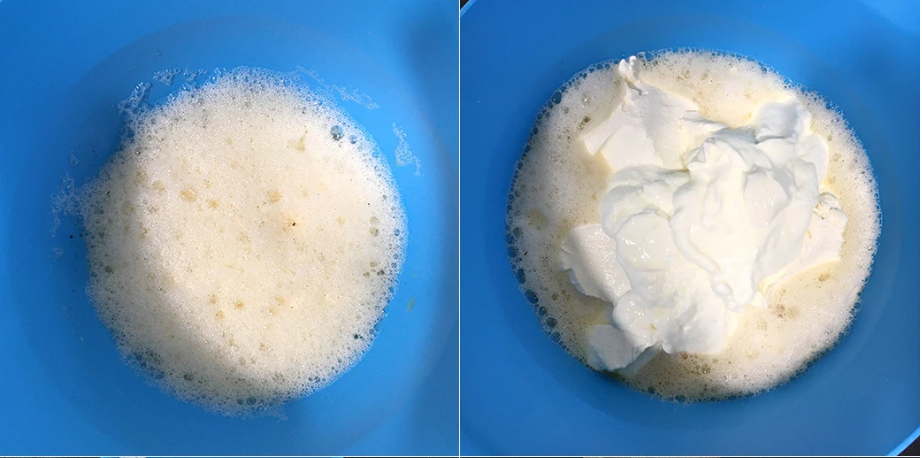
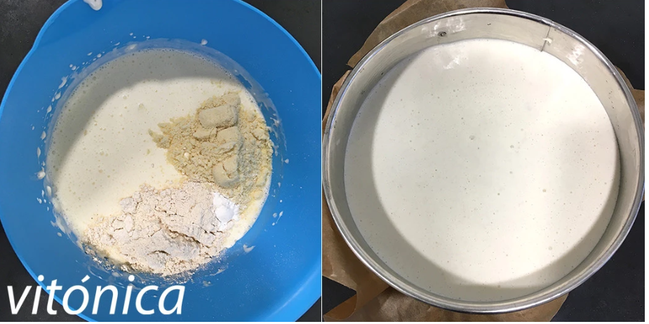

1. Precalentar el horno a 170ºC y preparar un molde redondo de fondo desmontable, de unos 18-20 cm de diámetro. Cubrir el fondo con papel sulfurizado, dejando que sobresalga para "engancharla" al cerrar el molde, y engrasar los bordes con aceite o mantequilla.
2. Batir con una batidora de varillas el huevo con los 100gde claras hasta que espume y tenga volumen, un par de minutos. Añadir los 350g de queso de crema y los 150g de yogur skyr escurrido del líquido que suelen llevar. Echar también los 5ml vainilla o limón, los 2.5ml edulcorante (si se usa) y batir un poco más hasta incorporar.
3. Agregar los 25g de harina, los 2g de levadura y 1 pizca de sal, y batir a velocidad baja hasta que no haya grumos secos y tengamos una masa homogénea, líquida y algo espesa. Echar con cuidado al molde y hornear durante unos 50-55 minutos.
4. Dependerá del tipo de molde y del horno, así que conviene vigilarlo cuando ya lleve media hora. Girar el molde a mitad para que se dore por arriba uniformemente. Estará listo cuando al pinchar el centro con un palillo salga limpio. Dejar enfriar por completo sobre una rejilla antes de desmoldar con mucho cuidado. Estará mucho mejor si se deja después enfriar en la nevera durante un par de horas.